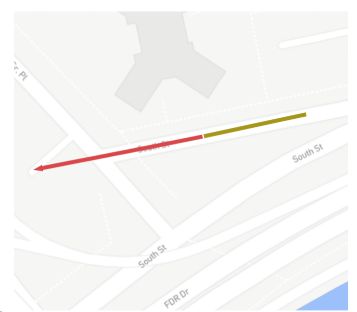
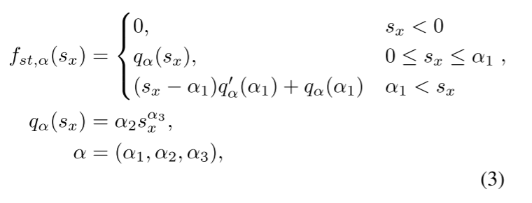
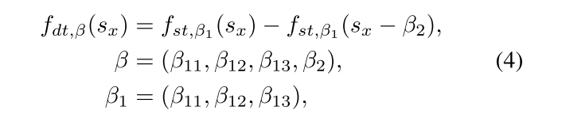
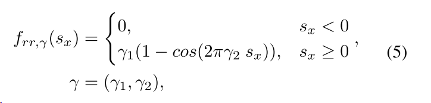
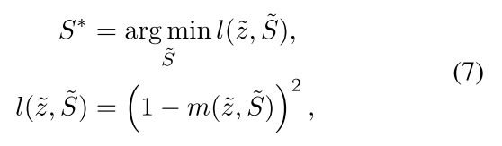
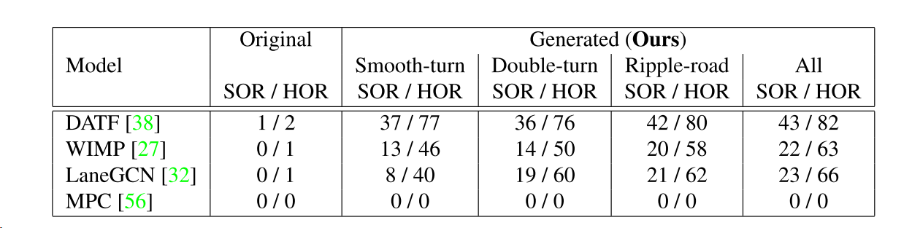
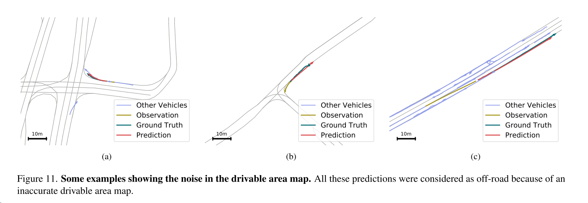

Vehicle trajectory prediction works, but not everywhere
cvpr2022
0 摘要
车辆轨迹预测是目前自动驾驶汽车的一个基本支柱。工业界和研究界都通过提供公共基准来认识这样的需要。虽然最先进的方法令人印象深刻，但是它们没有off-road predicton（脱离道路预测），它们在城市（基准之外的场景）的推广仍然有待探索。在这项工作中，我们表明这些方法不能推广到新的场景。我们提出了一种方法，自动生成逼真的场景，产生最先进的能导致go off-road（脱离道路）的模型。我们通过对抗性场景的场景来框定问题。该方法基于原子场景生成函数和物理约束的模型。我们的研究表明，在现有的基准中，超过60%的现有场景可以修改来使预测方法失败。进一步研究表明，生成的场景1真实的，2可以用来使得现有模型更加稳健，下降30-40%的错误预测率。code:S-attack Library。
1 结论
在这项工作中，我们提出了一个条件场景生成方法。我们发现，几种最先进的轨迹预测模型在我们生成的场景中失败了。值得注意的是，他们在预测中有很高的off-road predictions。接下来，利用图像检索技术，我们检索了部分类似于生成的场景的真实世界的位置，并展示了它们在这些位置的失败。我们使模型对生成的场景具有鲁棒性。我们希望这个框架有助于更好地评估自动驾驶系统中涉及的预测模型。
2 介绍
图1显示了一个真实世界的示例，其中在已知基准[19]中达到零越野的最先进模型在美国纽约南街失败。由于收集和注释所有真实场景的数据不是一个可行的和负担得起的解决方案，我们提出了一种方法，自动调查的鲁棒性车辆轨迹预测的场景。我们通过真实对抗场景生成的镜头来解决这个问题。

给定一个可观察到的场景，我们希望生成一个现实的修改，以导致预测模型失败。有一个off-road prediction是一个对失败清晰的暗示在模型的场景推理中。为了找到一个模型偏离道路的现实例子，应该探索可能场景的巨大空间。一种解决方案是基于数据驱动来模拟数据集的分布来生成模型。但是他们可能在制作现实场景上不关键因为可能的人工制品。更多的是，它们将表示真实世界场景的一部分，因为它们不能生成超出在数据集上观察到的场景（不能外推）。因此我们提出了一个简单而有效的替代方案。我们表面，它是可能的，因为它使用有限数量的简单函数将场景转换成新的现实。我们的方法可以显示地外推到新的场景。
我们引入原子场景生成函数，这些函数被给予一个数据集里的场景，函数生成多个新的场景。这些函数被选择以便于它们可以覆盖一系列真实场景。然后我们选择那些场景，这些场景中预测模型预测了一个off-road 轨迹。通过使用三个在Argoverse公共数据集上的最先进的轨迹预测模型，我们证明了数据集中超过60%已存在的场景可以被以一种方式修改，然后使得最先进的方法失败（就是产生了off-road）。我们确认生成的场景是现实的。因为通过寻找了一些生成场景，它们存在一部分和真实世界的位置类似。我们还展示了这些模型off-road predictions在这些场景下。最后，我们从每个场景中提取合适的特征，通过使用图像检索技术来检索公共地图数据库。我们最后表明，这些生成的场景可以用来提高模型的鲁棒性。
我们的贡献有四个方面：·我们强调需要对车辆轨迹预测模型的鲁棒性进行更深入的评估; ·我们通过促进一个在原子场景生成函数上的高效的生成模型，生成了逼真的真实对抗场景，以此提出了一个开源的评估框架。; ·我们通过找到模型失败的类似真实世界位置来证明我们生成的场景是逼真的;·我们证明了我们可以利用生成的场景来使模型更加健壮。
3 相关工作
车辆轨迹预测。场景在车辆轨迹预测中起着重要的作用，因为它约束了智能体的未来位置。一些人建议使用语义分割图来构建圆形分布并输出最可能的区域[21]。另一种解决方案是使用卷积神经网络（CNN）对原始场景图像进行推理[31]。许多后续工作以语义分割格式表示场景，并使用CNN对图像的学习能力来解释场景[10，17，18，25，40]。Carnet [45]使用注意力机制来确定更多关注的场景区域，从而得到可解释的解决方案。最近的一些工作表明，场景可以用矢量格式而不是图像来表示[7，24，32，47]。为了进一步改进模型的推理并生成相对于场景可接受的预测，已经提出了使用对称交叉熵损失[38，41]，off-road损失[8]和REINFORCE损失[16]。尽管所有这些努力，已经有有限的注意力来评估新场景的轨迹预测模型的性能。我们的工作为这种评估提出了一个框架。
评估自动驾驶系统。自动驾驶汽车处理附近的动态代理和周围的静态环境。有几项工作研究了自动驾驶汽车模块对道路上动态代理状态的鲁棒性，例如，其他车辆。以前的一些工作改变了道路上其他代理的行为，以充当攻击者，并评估模型与其他代理交互的性能[3，4，20，26，28，30，43，52]。其他人直接修改原始的感觉输入，以对抗的方式改变代理的状态[15，49，51，53]。
除了动态智能体之外，驾驶高度依赖于车辆周围的静态场景。模型的场景理解可以通过修改输入场景来评估。以前的作品通过改变天气条件[33，50，54]，生成对抗性的驾车广告牌[29，55]，以及在道路上添加精心制作的补丁/线条[12，46]来修改原始的感官输入。这些作品没有改变场景的形状。我们提出了一个条件场景生成方法来评估场景推理能力的轨迹预测模型。此外，我们的方法不同于基于图[35]或语义图[44]的数据驱动场景生成。数据驱动的生成模型容易产生伪影，并且无法外推训练数据。我们的是一个对抗性的，可以推断到新的场景。
4 真实场景生成
在4.1节中介绍了定义的符号之后，我们在4.2节中展示了如何生成每个场景，并在4.3节中展示了如何满足物理约束。最后，我们在4.4节介绍我们的搜索方法。
4.1 问题设置
车辆轨迹预测任务通常被定义为在给定其观察轨迹h、周围车辆的状态a和场景S的情况下预测车辆z的未来轨迹。为了简洁起见，我们假设S是矢量表示格式[19]。具体地，S是xy坐标空间中所有通道的点的堆叠的2d坐标的矩阵，其中每行表示点s
=（sx，sy）。形式上，预测器g的输出轨迹z为：
给定场景S，我们的目标是创建具有挑战性的逼真场景S*，我们将在3.2节中解释。
4.2 条件场景生成
我们可控场景的方法来生成不同的场景，是以现有的场景为条件的。具体来说，我们选择了一组原子函数，代表了一个典型的道路拓扑结构。为此，我们根据h进行场景归一化，应用变换函数，最后反归一化将所生成的场景返回原始视图。注意，S的每个变化都是跟随着h和a上的相同变换。我们以以下形式定义每个场景点上的变换：
平滑转弯：此功能表示道路中不同类型的单转弯。

其中，α1确定转弯的长度，α2，α3控制其锐度，q′
α表示定义的辅助函数qα的导数。注意，根据定义，
双转弯：这些功能表示两个方向相反的连续转弯。此外，还有一个变量表示它们之间的距离：

其中β 1是等式（3）中描述的每个转弯的参数集，β 2是两个转弯之间的距离。图2c中示出了一个示例。
Ripple-road：对预测模型来说可能具有挑战性的一种场景是这个波浪形的路。

其中γ1确定转弯曲率，γ2确定转弯的锐度。图2d中描绘了一个这样的转弯。
4.3 物理限制
每个场景都由场景和车辆轨迹组成，生成的场景必须是可行的，否则就不能代表现实世界中可能发生的情况。我们认为，如果人类驾驶员能够安全通过，那么这种情况是可行的。这意味着物理约束-即，牛顿定律-不应该被违反。牛顿定律根据每条道路的曲率指出了每条道路的最大可行速度[22]：
其中R是道路半径，μ是摩擦系数，g是重力。为了考虑最保守的情况，我们选择生成的道路中存在的最大曲率（最小半径）。然后，当速度高于最大可行速度时，我们减慢历史轨迹，并将其命名为
4.4 场景搜索法
在前面的部分中，我们定义了一种逼真的可控场景生成方法。现在，我们介绍一种搜索方法，以找到特定于每个轨迹预测模型的具有挑战性的场景。我们将m定义为z和S的函数,来测量预测点具备off-road的百分比，这些预测点通过使用一个可驱动区域的二进制掩码来获得。

其中，

5 实验
我们进行实验来回答以下问题：1）预测模型在我们生成的场景上的性能如何？2)生成的场景是否真实，是否可能与真实世界的场景相似？3)我们是否能够利用生成的场景来提高模型的鲁棒性？
5.1 实验设置
5.1.1 基线和数据集
我们使用不同的场景推理方法（车道图注意力[32]，对称交叉熵[38]和反事实推理[27]）在基线上进行实验，这些方法是性能最好的模型之一，并且是开源的。
LaneGCN [32].它从矢量化的场景中构建一个车道图，并使用自我注意力来学习预测。该方法是Argoverse预测挑战2020的顶级方法之一[2]。它是一个多模态预测模型，也提供了每个模式的概率。因此，在我们的实验中，我们考虑具有最高概率的模式。
DATF [38].它是一种基于流量的方法，使用对称交叉熵损失来鼓励产生道路预测。该多模态预测模型不提供每个模态的概率。因此，我们考虑最接近地面真值的模式。
WIMP [27].他们采用场景注意力模块和动态交互图来捕捉几何和社会关系。由于它们不提供其多模态预测的每个模态的概率，因此我们考虑最接近地面真值的模态。
MPC [6，56].我们报告了基于规则的满足运动学约束的模型的表现性能。我们使用了一个众所周知的基于规则的模型，它遵循车道中心[56]。虽然在轨迹预测中可以使用许多方法来满足运动学约束(类似于[6])，但我们使用了带有自行车动力学模型（with a bicycle dynamic model）的模型预测控制(MPC)。
我们利用了Argoverse数据集[19]，与我们训练基线的数据集相同。给定2秒的观察轨迹，目标是预测接下来的3秒作为车辆的未来运动。这是一个大规模的车辆轨迹数据集。该数据集覆盖了匹兹堡和迈阿密的部分地区，车道总长度为290公里。
5.1.2 评价标准
Hard Off-road Rate (HOR)：硬off-road的程度：为了测量具有关于场景的不可接受的预测的样本的百分比，我们将HOR定义为在预测轨迹点中发生至少一个off-road场景的百分比。 只要有一个就认定该场景被对抗破坏了。
Soft Off-road Rate (SOR)：为了更彻底地测量每个场景中的性能，我们测量off-road预测点在所有预测点上的百分比，并且报告所有场景的平均值。不是只要用一个，每个场景的预测点有很多，取每个场景收到对抗的百分比，然后做平均。
5.1.3 实现细节
对于所有实验，我们将迭代次数设置为60，摩擦系数μ设置为0.7 [11]，b等于5。对于黑箱算法的选择，由于在我们的情况下参数的搜索空间很小，我们选择了蛮力算法。我们使用32GB V100 NVIDIA GPU开发了我们的模型。
摩擦系数可能在其它地方看到。
5.2 结果
我们首先在表1中提供了将我们的方法应用于基线的定量结果。最后一列（全部）表示第3.3节中所述检索方法的结果。我们还在表的其他列中报告了在优化问题等式（7）中仅考虑一类场景生成函数的性能。结果表明，在生成的场景的不同类别的所有基线的SOR和HOR大幅增加。这表明生成的场景对于模型来说是难以处理的。LaneGCN和WIMP具有竞争力的性能，但WIMP运行时间比LaneGCN慢50倍。因此，我们使用LaneGCN来进行剩余的实验。

表1.比较原始数据集场景和我们生成的场景中不同基线的性能。SOR和HOR以百分比报告，较低的表示模型对场景的更好推理。MPC作为一种基于规则的模型，在原始场景和我们生成的场景中始终具有道路预测。
图3显示了我们生成的场景中基线的性能。我们观察到所有模型都受到生成场景的挑战。更多病例见附录B。

不同模型在某些生成场景中的预测。所有模型都受到生成的场景的挑战，在可行驶区域预测失败。
在表1中，我们观察到原始场景中所有方法的SOR都小于或等于1%。我们的探索表明，超过90%的off-road情况是由于数据集的可驾驶区域地图中的标注噪声（annotation noise）造成的，并且模型相对于场景几乎没有错误。比如下图，标注的情况存在噪声，导致本不可能的行驶轨迹发生了，所以才导致的那1%的误差。

场景的可行性是生成场景的重要特征。如第3.3节所述，我们添加了物理约束以保证场景的物理可行性。表1表明MPC作为基于规则的模型，在生成的场景中几乎没有任何越野。证明了在给定的历史轨迹下，场景是可行的。为了研究增加的约束的重要性，我们放松了生成的场景的约束。我们报告的性能的基线和MPC的情况下，在他们的h的最大速度高于Vmax。在表2中，我们观察到，如果没有这些可行性保证约束，MPC无法遵循道路并具有3倍以上越野的情况更多。我们的结论是，这些限制是必要的，使场景可行。我们在所有的实验中保持约束，以生成可行的场景。
没有第3.3节中解释的物理约束。这些数字是在其h中速度高于vmax的数据样本上报告的。
表2中。应该分别理解为使用物理限制和不使用物理限制。with physics和without physics。
5.3 真实世界检索
到目前为止，我们已经表明，生成的场景沿着的约束是可行的/现实的场景。接下来，我们要研究生成的场景的可扩展性/存在性。受图像检索方法[37]的启发，我们开发了一种检索方法来查找现实世界中的相似道路。
首先，我们使用OSM [1]提取4个任意城市（纽约、巴黎、香港和新墨西哥州）的数据。然后，从每个城市收集200×200米的随机样本20，000个。请注意，它与Argoverse示例中的视图大小相同。然后，需要特征提取器来获得每个场景的特征向量。我们使用LaneGCN的场景特征提取器MapNet来获得每个样本的128维特征向量。然后，我们使用众所周知的图像检索方法K树算法[37]。它首先多次使用K-Means算法将所有场景的特征向量聚类到预定义数量的聚类中（在我们的情况下为1000）。然后，给定生成的场景作为查询，基于与查询场景的相似性对真实的场景进行排序，并检索与查询最接近的10个场景。最后，我们在这些例子中测试预测模型。图4中提供了一些示例。更多的场景可以在附录B中找到。
使用我们的真实世界检索算法检索一些与生成的场景相似的真实世界位置。我们观察到该模型在巴黎（a）、香港（b）和新墨西哥州（c）失败。
"lanegcn w/aug" 则表示在该方法或模型中使用了数据增强技术。
pow是一种增强技术，Transformation power is determined by α2×3, 000, β12×3, 000 and γ1 for Equation (3), Equation (4), and Equation (5), respectively which represents the amount of curvature in the scene.表示场景的曲率。
5.4 鲁棒性
在这里，我们研究是否可以使模型对新生成的场景具有鲁棒性。为此，我们使用原始训练数据和我们的方法生成的示例的组合对训练模型进行了10个epoch的微调。
表3表明，在不损失原始准确性度量的性能的情况下，通过在完全/最大设置中预测减少40%的SOR和减少30%的HOR，微调的模型不太容易受到生成的场景的影响。虽然结果显示所有转换功率都有所改善，但在极端情况下的增益更高，即，模型经过微调后可以更好地处理它们。
在图5中，将原始模型的预测与鲁棒模型的预测进行了比较。原始模型在没有off-road的情况下无法预测，而微调后的模型能够预测合理且没有任何off-road。
5.5 讨论
在这一部分，我们将进行实验并进行推测，以揭示模型的弱点。
1.我们研究了将生成的场景转换到新模型的能力，即模型如何在为其他模型生成的场景上执行。我们通过为源模型存储生成的场景来进行该实验，从而导致off-road预测，并在存储的场景上评估目标模型的性能。表4显示，被转移的场景仍然是其他模型难以解决。
表4.研究生成场景的可转移性。我们为源模型生成场景，并由源模型保存具有off-road预测的场景。使用这些场景对目标模型进行评估。报告的数字是SOR/HOR值。将数字四舍五入为最接近的整数。
2.研究了变换函数参数变化对模型性能的影响。为此，我们平滑地改变了100个随机场景的变换参数，并将生成的场景的HOR热图可视化。图6表明，模型更容易受到更大的变形参数的影响，即更尖锐的转弯。此外，它还显示，与右转弯相比，左转弯的off-road程度更高，这可能是由于数据集中的偏差[36]。在稳健模型中，可以看到明显的改进。
图6.不同转换函数的基线的定性结果。红色表示这些场景中更多的off-road预测，绿色表示更高的可接受预测。通常，模型在具有高曲率的转弯处失效。我们可以通过微调成功地使LaneGCN模型更加鲁棒。
3.我们的实验表明，虽然该模型在原始场景中的off-road几乎为零，但在生成的场景中，它的off-road超过60%。为了假设这种差距的原因，我们探索了训练数据。我们观察到，在大多数样本中，历史h具有关于未来轨迹的足够信息，这减少了对场景推理的需要。然而，我们的场景生成方法改变了场景，使得h几乎不包括关于未来轨迹的信息。这基本上形成了一种需要场景推理的情况。我们推测，这个特性是一个因素，使生成的场景具有挑战性。
图7a示出了模型的失败，其中预测仅基于h而不是基于场景的推理。然而，鲁棒模型学会了对场景进行推理，如图7b所示。虽然我们的讨论是一个观察假设，我们留下进一步的研究，为未来的工作。
模型的输出在是否增加鲁棒性前后需要对场景进行推理。我们观察到，施加稳健性之前的模型主要使用h来预测，而不是对场景进行推理。然而，在稳健性之后，它在场景中的推理更多。
4.在某些情况下，我们生成的场景不能导致off-road预测。图8a中描绘了一个这样的例子。虽然和原路线不行，但是也能走。
预测模型的一些成功案例。在（a）中，模型跟随道路并在没有任何off-road的情况下进行预测。在（B）中，当模型预测在路上时，它突然改变了车道。
5.虽然我们的方法为评估轨迹预测模型提供了一种新的方法，但它有一些局限性。首先，我们的转换函数是有限的，它们不能覆盖所有现实世界的情况。然而，我们提出了一个通用的方法，可以通过添加其他类型的转换进行扩展。为了证明这一点，我们将车道合并添加到框架中，这将导致14%的HOR。第二，除了off-road标准之外，还存在其他失效标准。例如，与其他代理的碰撞或突然变道等异常行为。通过选择与其他智能体的碰撞作为标准，HOR在生成的场景中为1.68%，而在原始数据中为0.55%。此外，图8b示出了一种场景，其中模型的预测在可驾驶区域中，但是突然变道是异常的。
7 想法
7.1 未来可能可以做什么
4.3 物理限制中只考虑了最保守的情况，能否考虑到其他情况。
5.1.2 评价标准 可以来一个hard-soft评价标准 折中一下。比如，多余3个才认定为被攻击成功，数字可以指定。
5.5 的第三点提到了场景的生成不是基于历史轨迹的，提供不了很多关于未来轨迹预测的信息，所以可能是导致模型无法推理正确的原因，那么之后可以通过历史轨迹来生成场景。
7.2 缺点
3 相关工作部分：没有提对抗样本，我觉得提一下会好，可能是篇幅问题。
5.2 实验结果这部分，并没有解释表2中的w/phs和w/o phys分别是什么意思。应该分别理解为使用物理限制和不使用物理限制。with physics和without physics。